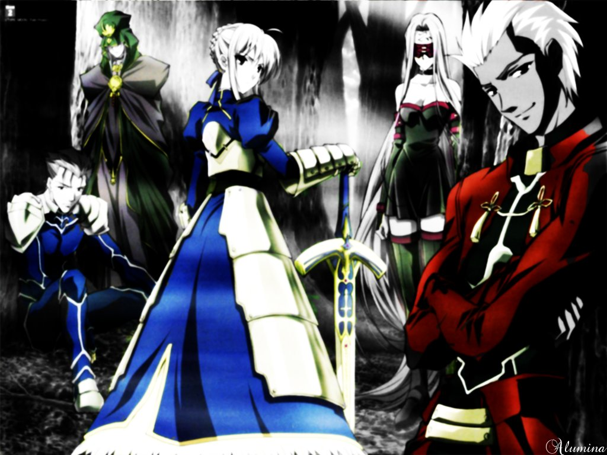

Английское название: Fate-stay Night
Русское название: Судьба - Ночь Схватки
Число серий: ТВ (24 эп.-24 мин. + (2 OVA + филим-2010-1 час.))
Жанр: приключения, фэнтези, романтика, драма
Создатели: Ямагути Юдзи, Насу Киноко
Оценка:8/10
Год выпуска: 2005, 2010

Описание аниме: После смерти приемного отца юный Сиро Эмия жил-поживал в одиночестве в огромном поместье. Вырос 16-летний парень добрым, работящим и хозяйственным, потому был окружен заботой и вниманием сразу двух девушек – младшей школьной подруги Сакуры Мато и учительницы Тайги Фудзимуры, формально – опекуна, на деле – скорее старшей сестры. Все рухнуло, когда Сиро узнал, что родной город Фуюки – арена магической битвы за Святой Грааль, которая повторяется раз в несколько поколений. Вот только мир ускоряется, в итоге с последней войны прошло всего 10 лет – и уже пришла пора новой.
Согласно древним законам,«королевскую битву» ведут семь Мастеров-магов, каждый из которых вызывает Слугу – одного из вечных героев ушедших или будущих эпох. Последний оставшийся Мастер получает Грааль – величайшее сокровище,которое выполняет любое желание. Правил нет, цель оправдывает средства,вчерашний друг может оказаться соперником и без раздумий предать, ударить в спину. Узнав правду, Широ становится перед тяжким выбором – уйти,отказаться от борьбы или рискнуть и поставить на карту все- невеликий (так он думает)магический дар, горячее сердце,отчаянное желание спасти всех,кто ему дорог. Но последней каплей на чаше весов чести имужества станут зеленые глаза издалекого прошлого, засиявшиетой самой ночью…
Подробный просмотр Героев
Назад